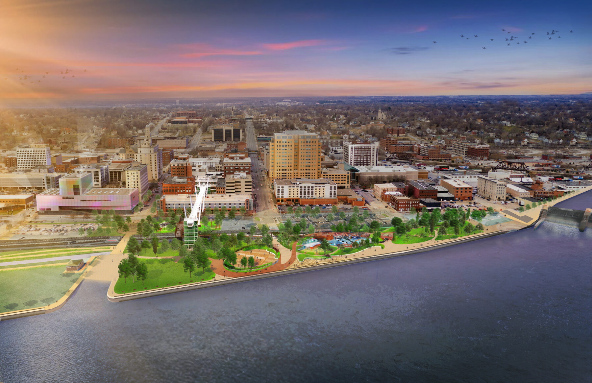

Davenport, sits in southeastern Iowa along the Mississippi River. It is also one of Iowa’s key urban areas and part of the Quad Cities region. Some of the main attractions in Davenport include the River Music Experience performing arts venue and the towering Skybridge. The Putnam Museum offers amazing local history and science exhibits. In the Northern part of the city it offers a variety of parks and recreational activities along the riverfront.
Iowa's Front Porch
Davenport
